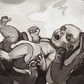

Final 1: El Niño de la Perdición
"Has criado al fin de los tiempos."
Condición: Dejar entrar a la Mujer Seductora, encontrar al feto y verlo alimentarse.
Descubres que has albergado el nacimiento de una abominación. La criatura te perdona, pero el mundo está condenado.